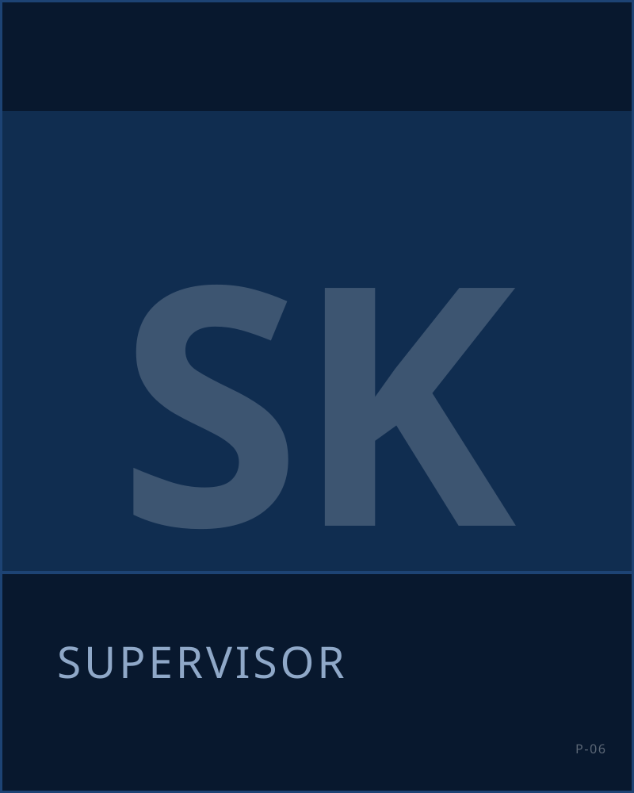

Sales agent B2C
Wat ga je doen?
Telefonische verkoop. Je voert commerciële gesprekken namens Nederlandse uitgevers, loterijen, goede doelen en abonnementsmerken, met als doel een sale. Je werkt vanuit ons kantoor in Rijswijk, in een team met een vaste supervisor.
- Je belt namens opdrachtgevers met doelgroepen die volgens de campagne gebeld mogen worden, en doet een aanbod dat bij ze past.
- Je opent elk gesprek met wie je bent, namens wie je belt en waarom.
- Je luistert, stelt vragen en sluit af als het klopt. Wie niet wil, wordt niet meer gebeld.
- Je legt de uitkomst van elk gesprek vast in ons systeem.
- Je werkt met targets per campagne en bespreekt je resultaten met je supervisor.
- Je luistert met je supervisor je eigen gesprekken terug om beter te worden.
Past dit bij jou?
Wij zoeken collega’s die hun werk serieus nemen. Dat is belangrijker dan wat je hiervoor deed.
- Je neemt verantwoordelijkheid en komt je afspraken na.
- Je spreekt uitstekend en duidelijk Nederlands en kunt een professioneel gesprek voeren.
- Je bent communicatief sterk, niet bang om te praten en gaat makkelijk een gesprek aan.
- Je hebt doorzettingsvermogen en houdt van een uitdaging.
- Je bent minimaal 24 uur per week beschikbaar.
- Je wilt leren en neemt je eigen resultaat serieus.
Geen saleservaring? Geen probleem.
Je hoeft nog geen ervaren verkoper te zijn. Veel collega’s zijn bij KISS begonnen zonder enige commerciële ervaring. Als je goed communiceert, verantwoordelijkheid neemt en wilt leren, leren wij je het vak.
Werktijden en rooster
Drie diensten per dag
Ochtend, middag en avond. KISS is ook op zaterdag geopend.
Je stelt zelf je rooster samen
Je kiest binnen de beschikbare diensten welke je werkt. Het rooster wordt steeds twee weken vooruit gepland, dus je weet ruim van tevoren waar je aan toe bent.
Minimaal 24 uur per week
Meer mag. Parttime naast je studie of fulltime als baan: allebei kan.
Werken vanuit Rijswijk
Je werkt op onze vloer, want daar zit je team en je supervisor. Hybride werken kan onder voorwaarden tot de mogelijkheden behoren; dat bespreken we tijdens de kennismaking.
Wat bieden wij?
- Tot €21 bruto per uur
- Een oproepcontract of tijdelijk contract, met uitzicht op een vaste aanstelling
- Zelf je rooster samenstellen, twee weken vooruit gepland
- Een trainingsweek voordat je begint, en coaching daarna
- Een vaste supervisor voor je team
- Een informele sfeer en werk dat doorloopt: vaste opdrachtgevers, langlopende campagnes
- Ruimte om meer verantwoordelijkheid te krijgen en door te groeien
- Kantoor in Rijswijk met tram en bus voor de deur, naast de snelweg, gratis parkeren
De trainingsweek
Je begint met een week waarin je het vak leert. Geen week luisteren: je oefent en je belt.
- Theorie, plus product- en projectkennis van de campagne waarvoor je gaat bellen
- Sales- en gesprekstechniek: openen, doorvragen, bezwaren opvangen, afsluiten
- Praktische oefeningen en oefengesprekken met je trainer en je groep
- Live bellen onder begeleiding, met coaching direct na het gesprek
Meer over hoe wij opleiden: Training en ontwikkeling
Zo werkt solliciteren
Je reageert hieronder
Twee minuten, geen cv nodig.
Wij bellen je
In de regel binnen 48 uur, vanaf 070 789 06 49. We maken kennis, bespreken de vacature en wat er verder mogelijk is binnen KISS.
Persoonlijk gesprek in Rijswijk
Bij een goede eerste match nodigen wij je uit op kantoor. Je ziet de vloer en hoort precies wat het werk inhoudt.
Selectie voor de trainingsweek
Daarna beslissen wij of we je uitnodigen voor de training. Niet iedere kandidaat stroomt door.
Liever direct bellen? Bel 06 24 52 47 44, maandag t/m vrijdag van 09:00 tot 17:00.
Solliciteer direct
Wie je belt

Ons recruitmentteamRecruitment
Belt iedere sollicitant persoonlijk.
Veelgestelde vragen
Heb ik ervaring nodig?
Nee. Een volledige trainingsweek gaat vooraf aan je eerste gesprek. Duidelijk Nederlands, zin om te leren en verantwoordelijkheidsgevoel zijn wat je meebrengt.
Kan dit naast mijn studie?
Ja, vanaf 24 uur per week. Je stelt zelf je rooster samen binnen de beschikbare diensten en plant twee weken vooruit, dus het kan meebewegen met je collegerooster.
Wat verdien ik precies?
Tot €21 bruto per uur. In het eerste telefoongesprek rekenen wij voor waar jij op uitkomt.
Voor wie bel ik?
Voor Nederlandse uitgevers, loterijen, goede doelen en abonnementsmerken. Bij de kennismaking hoor je met welke campagne je start.